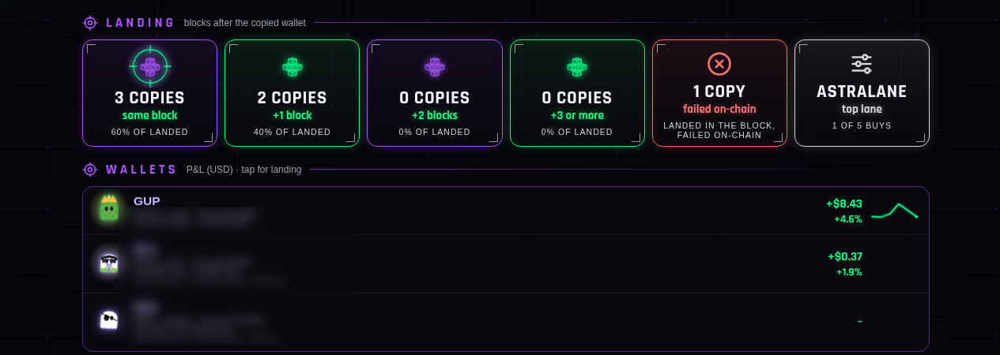
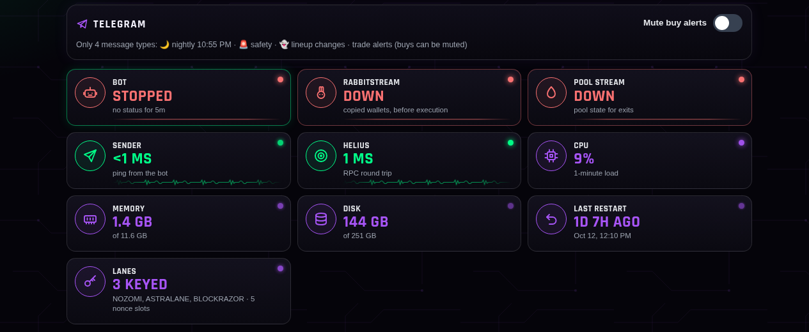

A Rust trading engine that copied chosen wallets' buys within the same few blocks, traded directly on Solana DEXs, and managed every exit on its own. It ran live with real money from Sep 26 to Oct 13, 2026.
The live dashboard on a good day early on: +$15.12 for the day and +$12.37 all-time after 33 real trades (tips and fees included). Not every day looked like this; see the full results below.
What it did
Same-block copying
Watched selected wallets in real time and copied their buys, aiming for the same block or the next one.
Direct DEX swaps
Built its own swap instructions for PumpSwap, Raydium CLMM and Meteora pools (DLMM, DAMM, DBC), using each venue's own pricing math.
Route decoding
Read buys that came through aggregators (Jupiter, DFlow, OKX) and worked out the real pool underneath, so it could trade that pool directly.
Fast landing
Sent through several send lanes at once with tips, plus Jito bundles and durable nonces, with warm connections so the first send isn't slow.
Automatic exits
Take-profit, stop-loss and "follow the exit" (sell when the copied wallet sells), priced from a live pool-state stream instead of slow RPC calls.
Tools around it
Python automation for wallet research, paper and shadow testing, credit budgeting and Telegram alerts, plus a live web dashboard.
How it was built
Wallet stream→Decode the trade→Rules: copy or skip→Build + send swap→Watch the position→Exit
Venue layer: each DEX lives behind one interface (load the pool, quote, build buy and sell), so adding a venue meant wiring it into decoding, trading, caching, lookup and live exit pricing. Every venue was proven with buy and sell simulations against real pools before going live.
Known-pool cache: pools are pre-loaded and kept fresh, so the hot path never waits on a lookup.
Send path: one signed transaction goes out through several keyed lanes in parallel. The dashboard tracked which lane won each landing.
Safety: pool-size floors, drain and rug checks, skip windows, a halt button and a sell-all button.

Landing tracker from the final lineup: 3 of 5 copies landed in the same block as the copied wallet and 2 one block later; it also logged which send lane won. (Wallet addresses blurred.)

System status: streams, sender and RPC latency, server load and the keyed send lanes.
Honest results
185live closed copy trades
44%closed in profit
−$71total, at $10–30 per trade
68 / 73take-profit / stop-loss exits
The engineering did its job: it found, built and landed trades fast and reliably, and every exit ran on its own. The strategy (which wallets to copy) did not make money at this size, and the owner shut it down on Oct 13, 2026. That's why I sell the engineering, never promised returns.
What it taught me
Paper is always better than live. Landing a block late, price premiums, failed sends and tips meant setups that hit 55–70% on paper landed nearer 40–60% live.
Only your own copy test counts. A wallet's own profit says little about copying it, because you can't buy at its price.
Speed is the edge and the cost. Tips and landing costs eat a big share of small trades, so lane choice and tip sizing matter.
Filters beat volume. Narrow setups (one venue, pool floors, skip windows) did better than copying many wallets.
Small samples lie. Rules that looked great on 10–20 trades failed on the next 20, so later work used split-half and shuffle tests before switching anything on.
RPC credits are real money. Research usage had to be capped and tracked.
What I can build for you
A copy-trading or strategy bot for Solana, with the venues, exits and Telegram control panel you need.
Make an existing bot faster and more reliable: landing, send lanes, Jito, nonces, pool decoding, exit pricing.
Monitoring and dashboards for a bot you already run.
You run the software with your own keys and funds. I build it, I don't hold client money, and I don't promise profits. The bot's source code is private; this page describes it.
Also by me: Mr. Mickens, a drum & bass break machine you can play in your browser, and Ghosty audio plugins (VST3/AU, Mac + Windows).